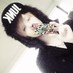
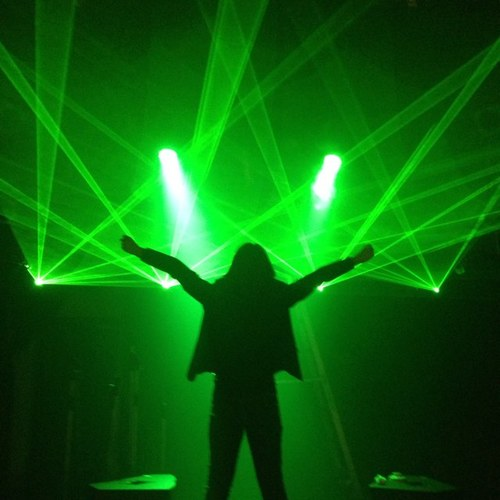
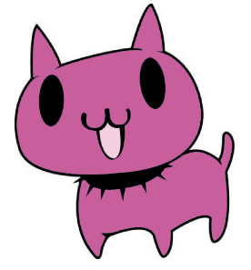
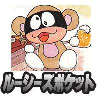
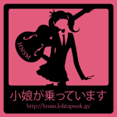
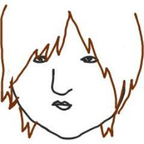

vkdb.jp
10th
Anniversary
お祝いメッセージ
2013年6月に10周年を迎える「vkdb.jp（ブイケーデービー）」に、
ヴィジュアル系関係者の皆様からお祝いのメッセージを頂きました。
-
株式会社スターチャイルド
代表取締役社長 星子 誠一 様一番最初にVkDBのサイトに出会ったのは、７～８年前だっただろうか。
直感的に、「これはヴィジュアル系に特化したウィキペディアになるな。ただ、日本じゃ受け入れられるのに時間がかかりそうだ」と感じた。
でも、ソーシャルメディアが一般的になった今では、熱心なV系ファンの必須サイトとしてだけじゃなく、先鋭的な音楽関係者の方々にもV系の辞書として閲覧されているようです。
ようやく時代の波が追いついて来たのかもしれませんね。
管理人の男性Kさんは物静かで真面目なV系ファンで、本職は某IT企業のシステムエンジニアの方です。
何回かお食事もさせていただいています。
「最初は趣味で始めた」のに、今では「本職が忙しくて止めたいけど、責任があるので止められない」状況ですよね。
ビジネスとしては成立し難く、膨大なデータの管理も大変だと思いますが、これからもV系シーンの為に頑張ってください。
VkDBはV系の歴史を紡ぐ大切なサイトだと思っています。
星子誠一（スターチャイルド代表取締役） -

ex-ケミカルピクチャーズ
平 一洋（てんてん） 様exケミカルピクチャーズ
てんてんこと
平一洋です。
僕が音楽始めた頃インターネットなどが普及し始め
もっともっと昔は情報なんて雑誌でしかしれない時代でした
ヴィジュアルデータベースの存在を知ったのは僕が上京するかしないかの時だった気がします
色んなバンドや先憧れの先輩などの経歴を見たりして
凄く楽しめましたし
何より自分が載った時は凄く誇らしくて
地元の友達やバンドマンの友達に自慢しまくったもんです
そして去年
関係者の方々と居酒屋で何気ない空気の中で桑さんを紹介された時は
なんだか
有名人にあったような嬉しさがありました
なんかドキドキしました
それから良くライブも、見て頂きTwitterなどで僕なんかと絡んでくれて本当にありがたく思っています
趣味で始めたって言ってましたが
10年も続くだなんて本当に凄いと思うし
そこらのバンドマンなんかより
よっぽどこのシーンに愛情を持っている方なんだなぁと
こんな大人が沢山いたら
いいのにと常々思います
普段私情の相談にものってくださり
本当ありがたくおもいますし
これからも宜しくお願いします
最後に10周年おめでとうございます！！！ -
株式会社ビジュアルワークス
ViSULOG編集部 山本 貴也 様vkdbさん10周年おめでとうございます！
vkdbさんには、いつも勝手にとってもお世話になっておりまして、ここを見ればヴィジュアル系の歴史が全て分かると言っても過言ではありません。
自分の名前が載った時には、これでやっとヴィジュアル系の一員として認められたような気がしてとても感激したのを覚えています。
元メンバーの動向をvkdbで知った時はちょっとショックでしたが……(笑)。
全てのバンドを網羅するのはかなり大変かと思いますが、これからも頑張ってください！
影ながら応援しています。
ViSULOG (Ex.Romance for～)
山本貴也 -

SHIBUYA-REX
橋本 裕也 様vkdb様、10周年おめでとうございます。
私個人的にも掲載頂いていたりしますが、10年前から今でも仕事柄ほぼ毎日と言っていい程活用させて頂いております。
ここまで詳しく、リアルタイムに更新して下さり、しかも10年という歴史がある。
ヴィジュアル系界になくてはならない存在です。
これからもどんどん活用させて頂きますので、20周年、30周年・・・目指して頑張って頂ければと思います。
SHIBUYA-REX 橋本裕也 -
漫画家
蟹 めんま 様 -

ライター
藤谷 千明 様VKDB.jp十周年おめでとうございます。
VKDB.jpというサイトは、メディアというよりはインフラのような存在だと思うので、末永く続けていただきたいと思います。
完全に思いつきで描いたネコもスッカリ定着して嬉しいかぎりです。
そのうちこのネコを商品化して小銭を儲けたいですね！嘘です！
藤谷千明a.k.a.まつおか（@fjtn_c）
-

ルーシーズポケット
山本 様10周年おめでとうございます。ヴィジュアル系が好きという情熱が、ここまで大きなサイトになり、たくさんの方達から支持を受けているのだと思います。手塚治虫先生「火の鳥」のような、ライフワークにして、ずっと続けてください！応援していますっ。
ルーシーズポケット -

HNSM管理人
柿原 華子 様vkdb10周年、おめでとうございます。
気がつけば、V系ライフに欠かせない存在となっていました。気になるバンドが現れたとき。好きなバンドに新メンバーが加入したとき。音沙汰のなかったバンドマンが新バンドを結成したとき。解散済みのバンドを好きになってしまったとき。まずはvkdbで情報収集をしています。むしろ、vkdbの更新記録で、V系の最新の情報を知ることも少なくありません。
V系通の皆さんの叡智が一箇所に結集した、vkdbはまさしく唯一無二のデーターベース！
いつもほんとうにお世話になっています。これほど膨大な情報を管理なさっているkuwaさんのご苦労を想うと、涙がちょちょぎれるどころの騒ぎではありません。10年も続けてくださって、ありがとうございます。
そして、これからも宜しくお願いします！ vkdbに幸あれ！
ご挨拶
-

vkdb.jp 管理人
kuwa こと 桑原隆夫29歳の時にvkdb.jpを立ち上げて、今年40歳になります。私の30代はvkdbと共にあったと言っても過言ではありません。気付けばライフワークとも呼べる存在となり、おかげさまで個人で管理するには少し大き過ぎるまでに成長しました。
しかし、vkdb.jpから新しい何かが生まれたりはしません。vkdb.jpは、ヴィジュアル系アーティストの皆様、バンギャル・バンギャル男の皆様、業界関係者の皆様が居てこそ存在し得るサイトです。
これからも、これまで同様にヴィジュアル系の一つの側面を記録し続けて行きますので、変わらずのご愛顧、よろしくお願い致します。
-
vkdb.jp スタッフ
システム、編集、管理人：kuwa(@kuwavkdb)
サーバー・インフラ：yosi(@yosi)
編集：編集者A(@Hensyu_A) -
Special Thanks
旧友H、グラスレふかださん、DECLARATION仞さん、Tokyo Borderless TV城戸さん、情報欄に投稿してくださったみなさん、そしてヴィジュアル系に関る全ての方々
vkdb.jp の歴史
-
1989
「ミュートマジャパン（ミュージックトマトJAPAN）」で「X（当時）」の「紅」に出会う。
-
2003/06/02
「grass thread（グラスレ）」に出会う。
-
2003/06/03
無料レンタルサーバーにFreeStyleWikiを設置、グラスレを参考に運営を開始。
当初のURLは http://visual.au-lait.net/ 、表記は「VK-DB」でした。「グラスレ」を見た時に、手作業で維持・管理していく事はとても大変で、限界があるのではないか。当時Web関係者など、一部で流行り始めていたWikiを活用して誰もが編集可能にすれば全て解決するのではないか。と感じたことが開設のきっかけです。結果的には、誰もが編集できる事によるメリットよりも、イタズラや真偽不明な情報が書き込まれてしまうデメリットの方が大きくなってしまい、編集機能の開放を停止せざるを得なくなり、維持・管理の手間としてはなんの解決にもなりませんでした。
-
2003/07/14
アクセス増加に伴い有料レンタルサーバーに移転。
-
2003/08
さらにアクセス増加に伴いサーバーに負荷がかかり、レンタルサーバー会社によりCGIを停止される。どうしようもなくなり移転先を募集。
-
2003/09/01
@yosi さんのご厚意によりRoxiteNetのサーバースペースの提供を受ける。
今思えば、開設から3ヶ月しか経っていないにも関わらず、助け舟を出して頂けたことは奇跡的だったのではないかと感じています。また、現在も @yosiさんには、ほとんど丸投げに近い形でvkdb.jpのインフラ面を引き受けて頂いています。
-
2003/10/05
-
2008/09/25
VkDB.jp主催イベント「tokyo Vize #001」を池袋CYBERにて開催
 #001
#001 #002
#002 #003
#003
※v-ize.netから動画へのリンクがありますが、現在は視聴できません。
-
2009/06
twitterアカウント@vkdb開始。
-
2010/07/29
VkDB.jp主催イベント「tokyo Vize #010」を大塚RED-Zoneにて開催。
この日をもって主催イベントは一旦終了。 -
2011/04
vkdb.jp内のページ数が1万を突破。
-
2013/05
クラウドサービスに移行
-
2013/06
10周年を迎える。
-
2013/10/17
vkdb.jp -ヴィジュアル系データベース- presents. 10th Anniversary 「反映しました。」@渋谷REX 開催
出演：D'sko / レクレンズ / VABEL / BLACK LINE / MirialD / Nobady / ChamberLain / REDRUM(シークレット) -
2014/04/22
vkdb.jp -ヴィジュアル系データベース- presents. 10th Anniversary 「反映しました。2」@渋谷REX 開催
出演：NAINE / フーデッドシール / Soarr / ViV / パスホリ / SUN OF A STARVE / セッションあのころ症候群'97 / セッションRehabilitation Maniax / 将軍オパイの助(O.A.) / シークレットバンド

{kind=link}
ドメイン取得。URLが http://www.vkdb.jp/ となる。